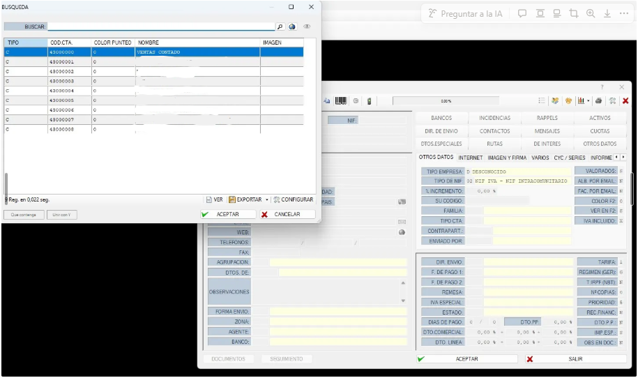

📘 1. Cómo entrar en nuestro MAIS
El MAIS cuenta con una lista de usuarios. Normalmente existen dos tipos principales:
- 👨💻 Programador (no accesible para un cliente estándar)
- 🛠️ Administrador (uso completo del sistema)
👉 Si no tienes un usuario creado, contacta con el administrador del sistema para que te proporcione uno.
⌨️ 1.1. Atajos de teclado rápidos
Existen tres atajos esenciales que agilizan el trabajo en el MAIS:
🔵 F2 – Ver listas desplegables
Si pulsas F2 sobre una casilla (por ejemplo, Clientes), aparecerá una lista con todos los registros disponibles.
👉 Abajo podrás pulsar Configurar para mostrar más campos de la lista.
🔵 “+” – Crear código automático
Al pulsar + en el teclado, el sistema genera automáticamente el siguiente código disponible, comenzando desde 0 y siguiendo de forma descendente.
🔵 Doble clic – Acceso directo
Con un doble clic sobre una casilla podrás acceder directamente a su ficha.
Ejemplo: Si la casilla Formas de agrupación está vacía, puedes hacer doble clic para abrir todas las formas disponibles e incluso crear una nueva.